Turkey Mobility – Smart Edu AI Program for Students and Teachers
Overview & Key Topics
Within the scope of the project titled “Exploring the Art of Science with Artificial Intelligence,” the “Smart Edu AI” training program was implemented as a 3-day intensive mobility activity held in Türkiye from 2 to 4 February, hosted by Milli Egemenlik Science and Art Center (BİLSEM). The program brought together students and teachers from Poland, Türkiye, France, and Spain to explore the integration of artificial intelligence into science education and creative learning processes. The main objective was to support the effective pedagogical use of AI-powered digital tools while strengthening a human-centered approach to learning.
Day 1: Building Foundations
The program started with ice-breaking activities and opening speeches to foster interaction among students and teachers. A pre-test was conducted on the first day to identify participants’ initial levels, and interactive questions were asked via Mentimeter. Expert sessions defined AI as systems that mimic human intelligence and presented examples of AI-supported applications that enhance science learning, including iNaturalist, Khan Academy, Brainscape, and VR tools. The host institution introduced the project objectives and expected learning outcomes to align participants’ expectations.
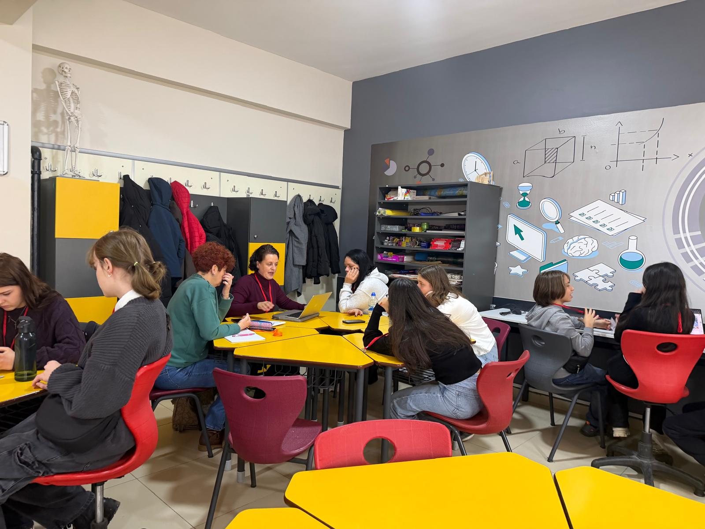
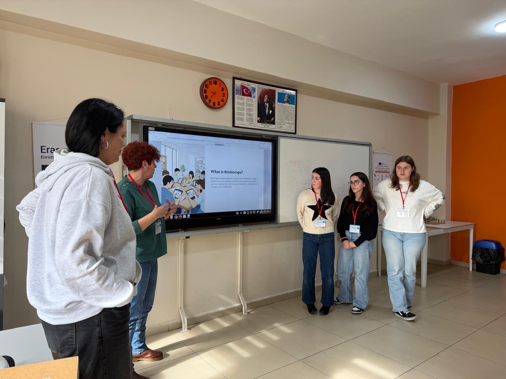

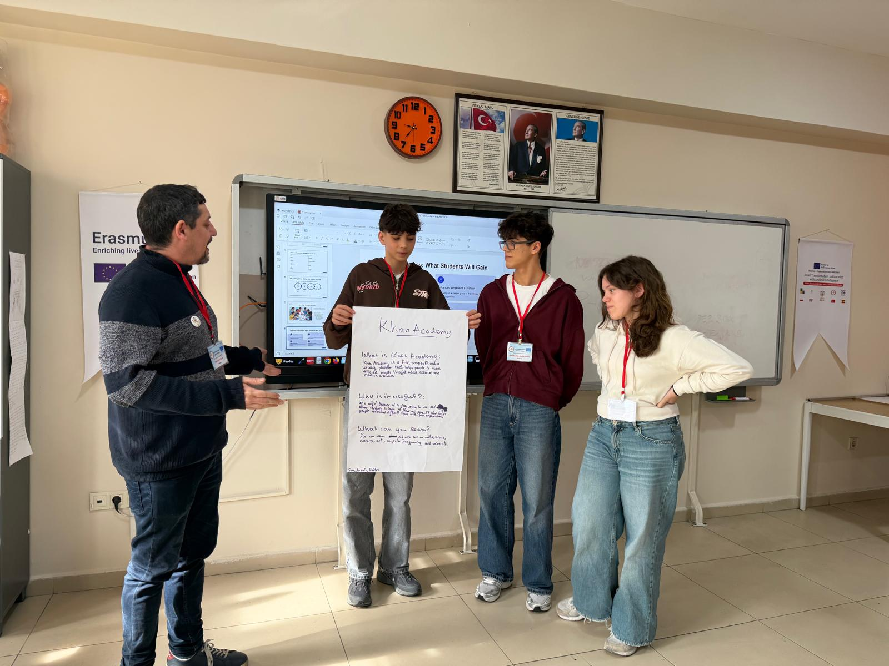
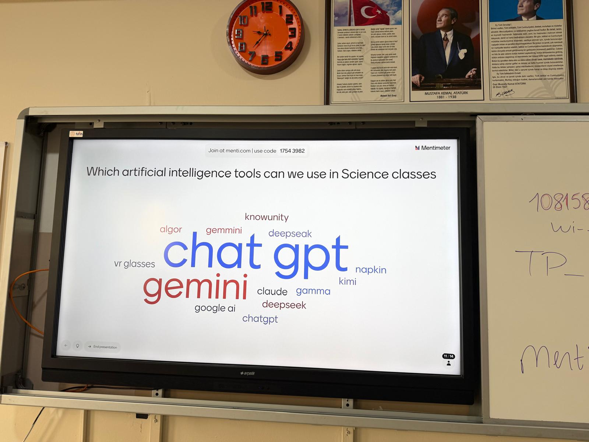
.jpeg)
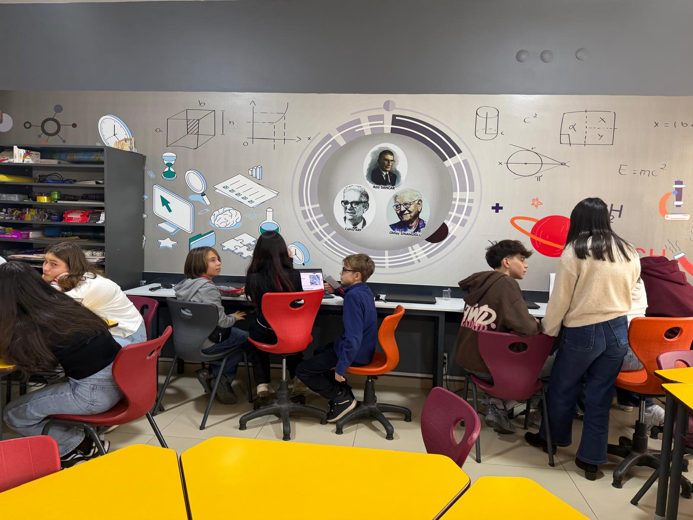

Day 2: Intercultural Interaction and Digital Production
The second day focused on strengthening intercultural interaction and blending science with art through digital tools. A mini concert performed by the host team and participant groups created an environment for cultural sharing. Using tools such as Chrome Music Lab and BandLab, participants created rhythms inspired by scientific themes and engaged in hands-on workshops where cultural elements were blended with digital music production. Participants worked in mixed groups to produce collaborative digital outputs.
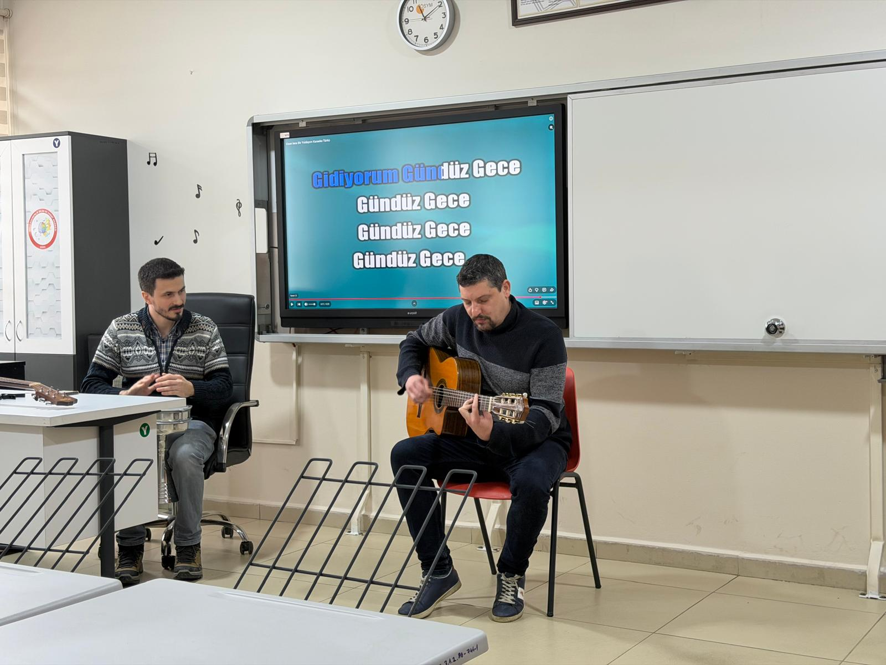

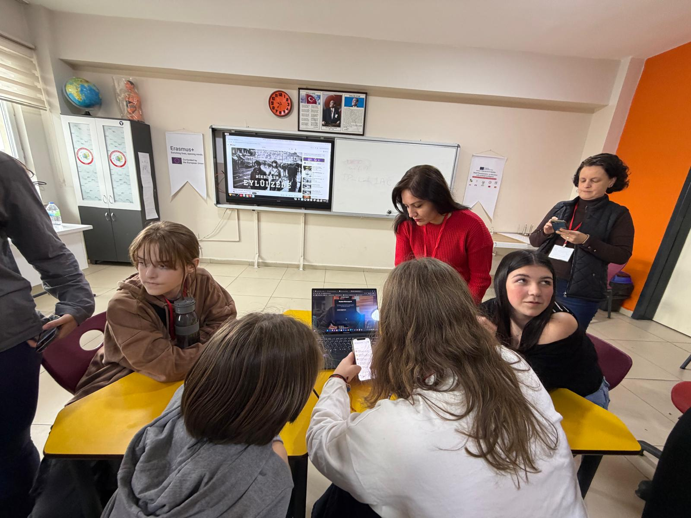
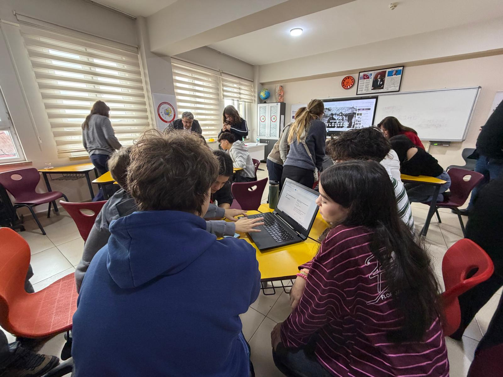
Day 3: AI-Supported Digital Design and Evaluation
The third day was dedicated to AI-supported digital design and production activities. Students and teachers created AI-assisted digital content and 3D visual designs reflecting their own cultures and scientific themes. At the end of the program, a post- test was conducted to assess learning outcomes, feedback sessions were held, and the mobility concluded with a certificate ceremony..
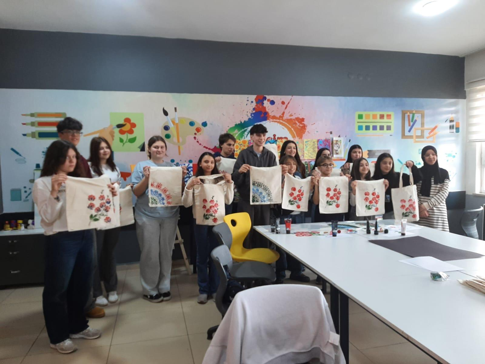
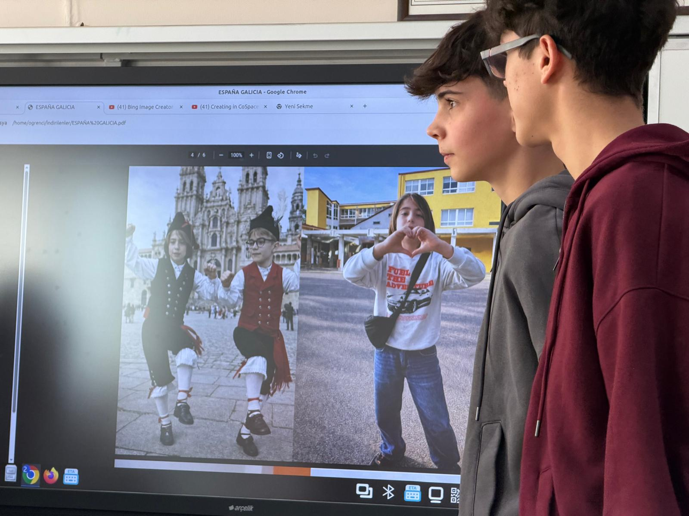
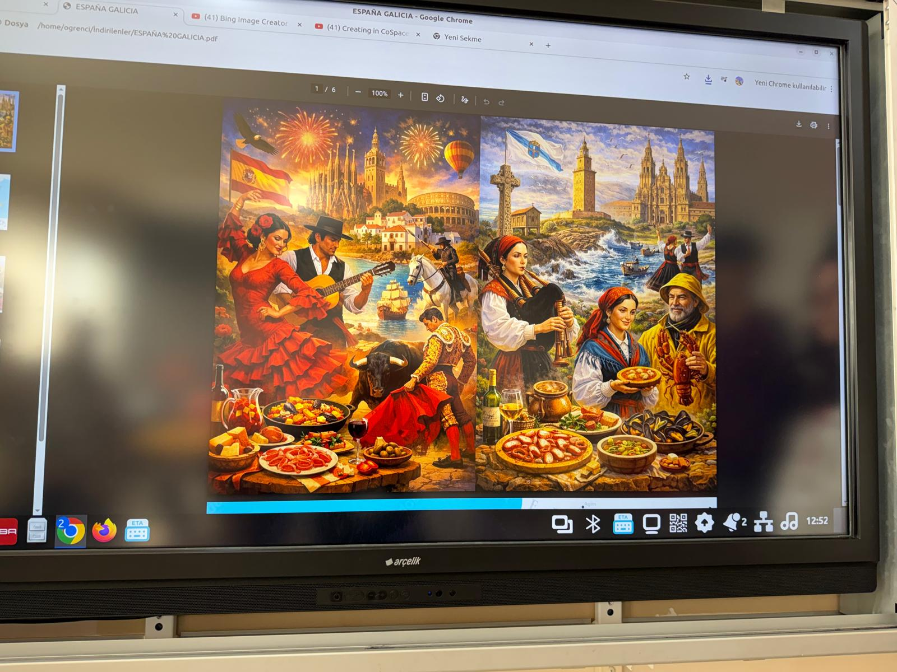
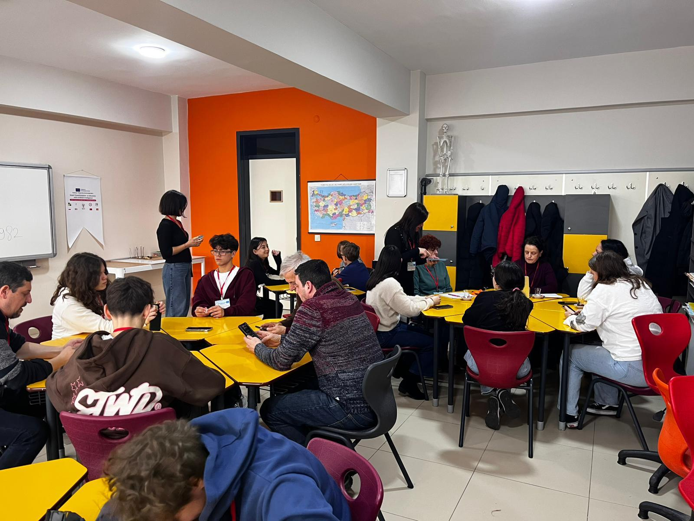


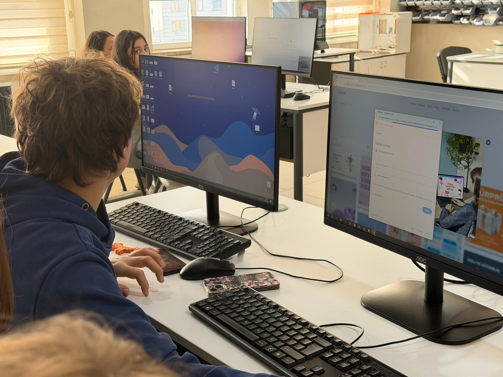
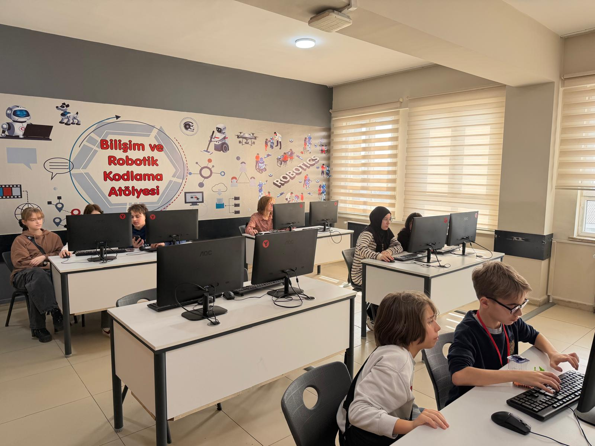
Conclusion
The mobility activity hosted by Milli Egemenlik Science and Art Center (BİLSEM) in Türkiye demonstrated the potential of AI to connect science and artistic creativity through practical applications. At the same time, it emphasized the essential role of teachers’ guidance, ethical awareness, and a human-centered approach in student- centered learning environments. Participants completed the program with concrete activity examples and a practical roadmap to implement in their own institutions.